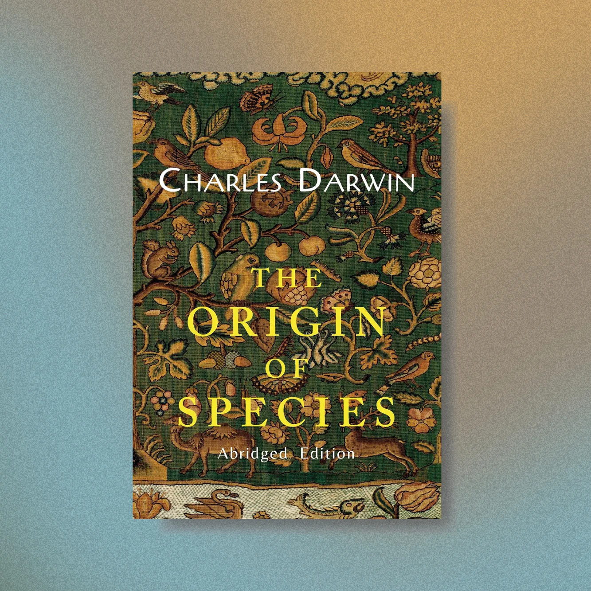
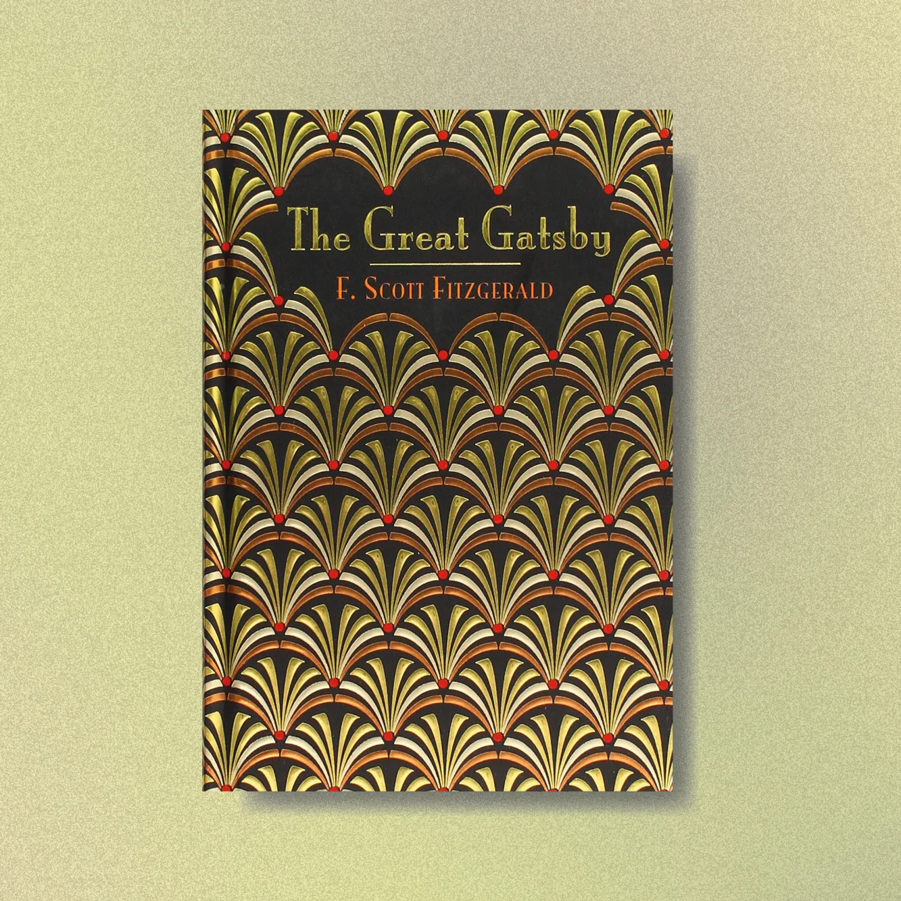
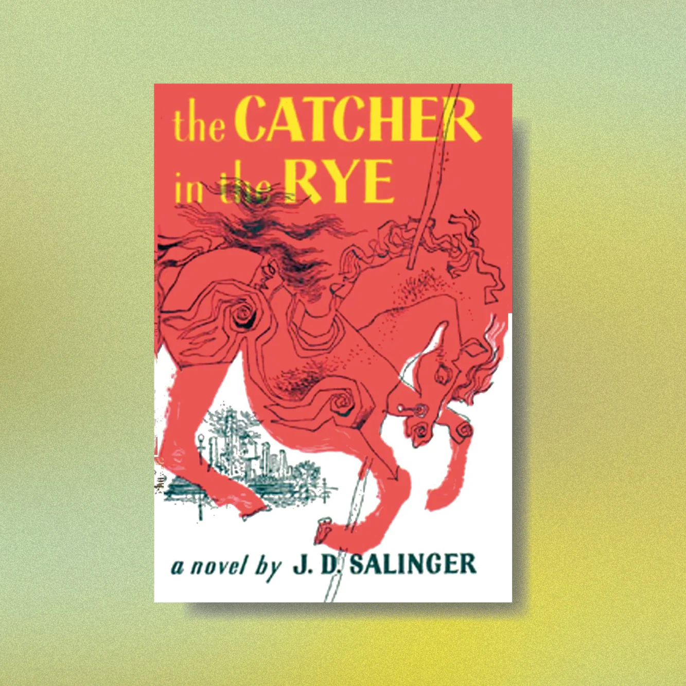
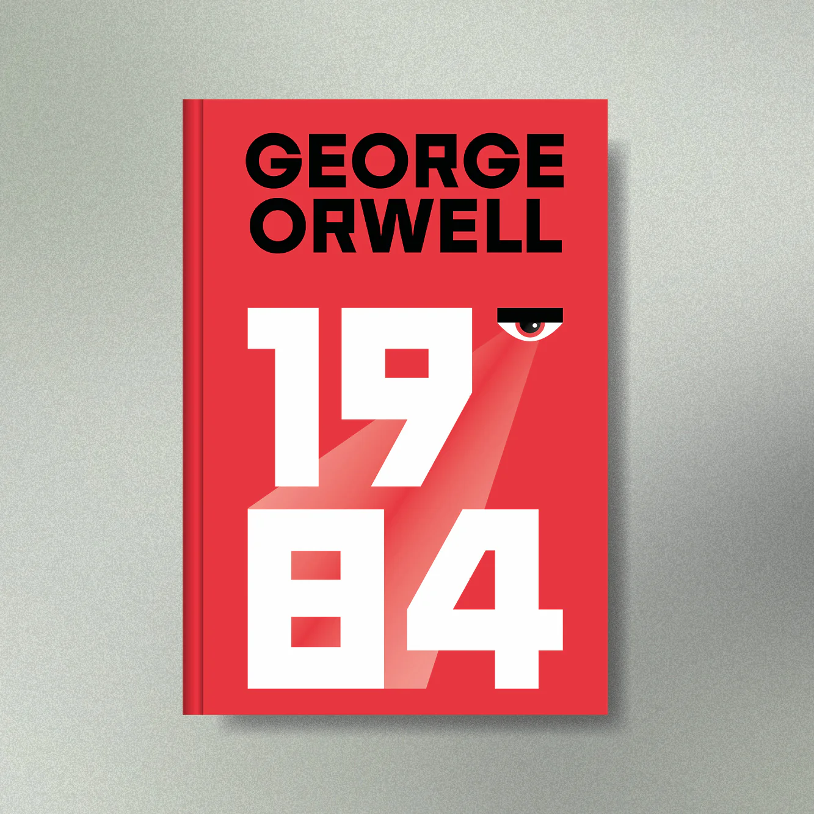
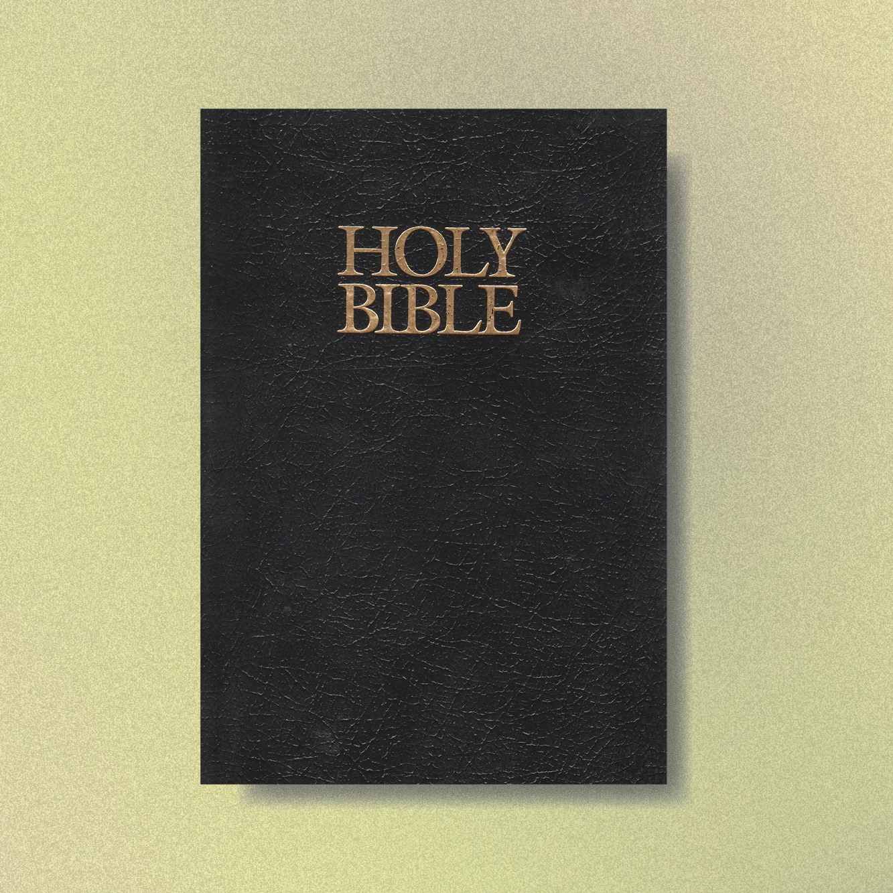
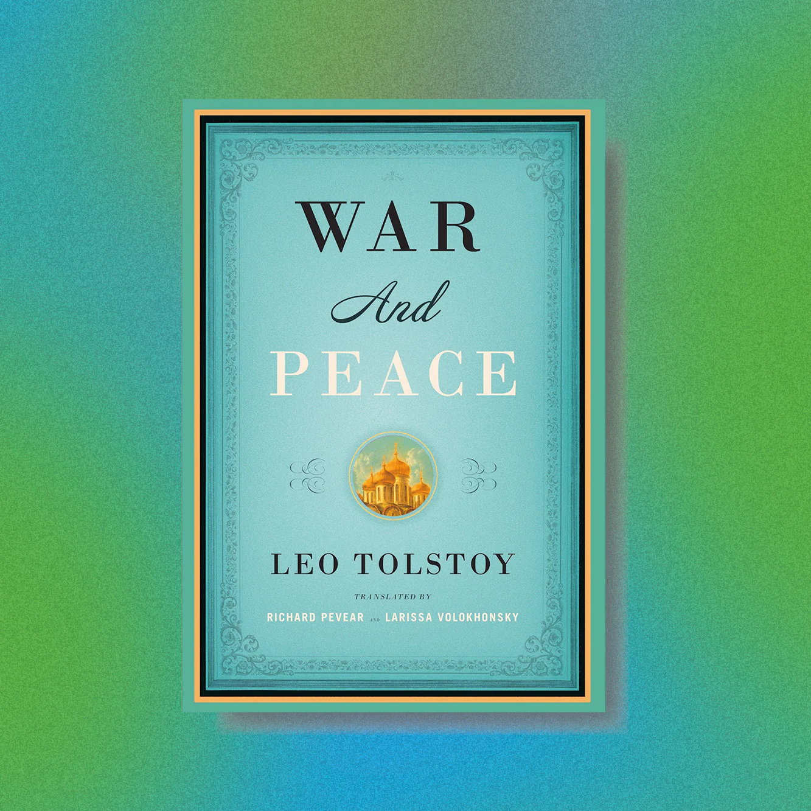
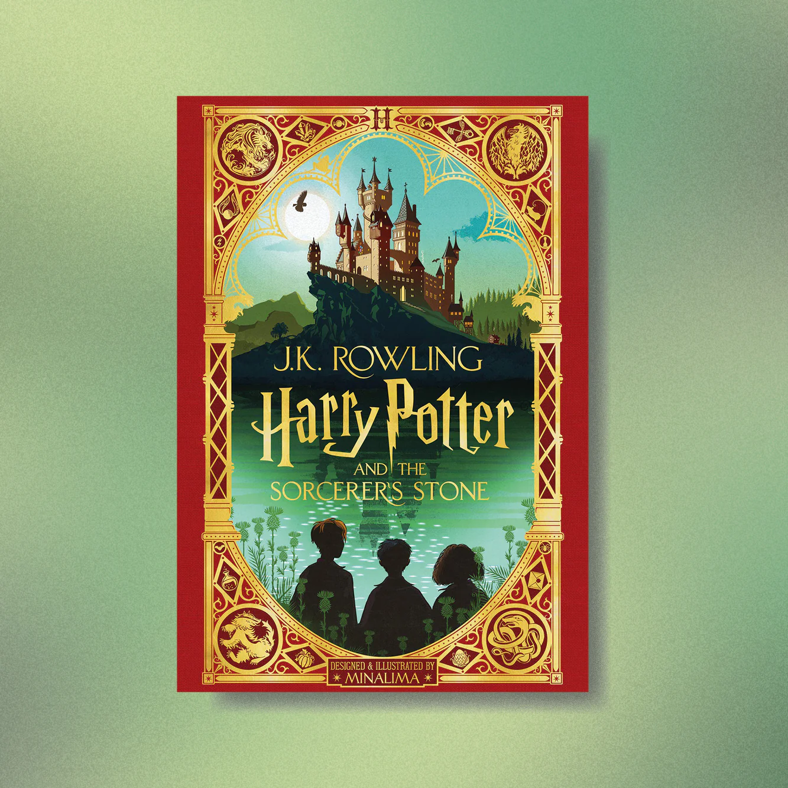
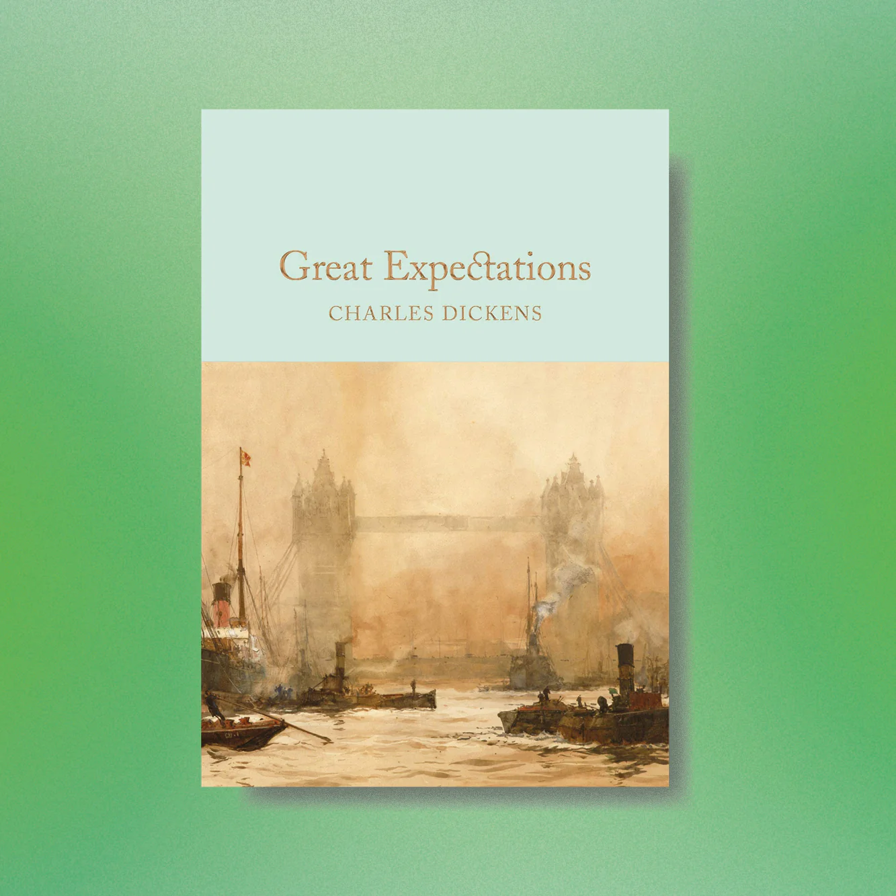
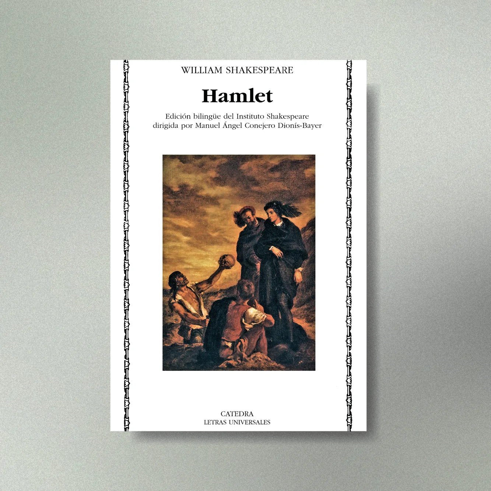

Unlimited Access
Read thousands of books anytime, anywhere.
Smart Bookmarking
Pick up exactly where you left off on any device.
Diverse Genres
From academic research to world-class fiction.
Reading for your mind
Spanning over thousands of years, it’s been books that have broken boundaries and challenged perceptions. Some have inspired creative revolutions, others have been a vital way of sharing age-old information, knowledge and wisdom. Some books offer an escape into a dystopian or fantasy world where wizards and witches wield magic to survive against savage sorcery.
Reading is not only good for gaining knowledge and furthering education, studies have also shown that it’s beneficial for our health and wellbeing, fitting into society, and developing employment skills.
They also say that reading for your mind is like exercise for your body, so if you haven’t gotten a mental work-out lately, grab a pen and paper and get ready to make a list of these classic novels that will expand your literary palate and/or teach you a thing or two.
Most Popular Books:
1. On the Origin of Species by Charles Darwin
GENRE
Scientific Literature.
READ IF
You are interested in how animals adapt to their environment to survive.
FUN FACT
It took over 20 years for Darwin to research, develop and finally publish his book.
There’s been a handful of controversial books that have shaken up the very ground in which we build our beliefs on…. and Charles Darwin’s famous ‘On the origin of species’ has been like no other.
It all started on December 27, 1831, when the young naturalist left Plymouth Harbor aboard the HMS Beagle to spend the next (what turned out to be five long) years gallivanting around the globe conducting research on plants, animals and the environment in which they preside.
His adventure turned into one of the greatest discoveries in the history of mankind - the theory of evolution. What Darwin found along his travels, and what he would eventually declare to the scientific community and broader world, was that existing organisms better suited for adaptation to their environment survive, while those that are poorly suited to their environment do not.

2. The Great Gatsby BY F SCOTT FITZGERALD
GENRE
Novel (however recent times would place it in the ‘historical fiction’ category).
READ IF
ou are interested in the 1920’s Jazz Era in the United States
FUN FACT
The book sold no more than 25,000 copies in Fitzgerald's lifetime, and then 25 million copies from then on.
he Great Gatsby was written in 1925 by an American writer F. Scott Fitzgerald and set in the Jazz Age on Long Island. The novel depicts narrator Nick Carraway's interactions with mysteriously wealthy Jay Gatsby, his obsession to reunite with his former lover, Daisy Buchanan and his love of lavish parties at a time when The New York Times noted "gin was the national drink and sex the national obsession".
Generations of readers have imagined, speculated, debated and thoroughly enjoyed the story and has become a true classic of twentieth-century literature.
This was Fitzgerald's third book, as well as the highest achievement of his career, however It wasn’t until F Scott Fitzgerald passed away that his work really began to gain interest. Eventually his book became a core part of most high school curricula in western cultures, especially American, with the strong focus of American popular culture. Numerous stage and film adaptations followed in the subsequent decades.

3. The Catcher In The Rye BY J.D. SALINGER
GENRE
Novel.
READ IF
You’re interested in teenage angst, emotions and development.
FUN FACT
After publishing The Catcher in the Rye, Salinger became a recluse.
The Catcher in the Rye, was written by J.D. Salinger and published in 1951. The novel is set around the 1950s and is narrated by a young man named Holden Caulfield, who while telling the story, makes it clear that he is undergoing treatment in a mental hospital or sanatorium. The novel details two days in the life of the 16-year-old after he’s been expelled from school and touches on the emotions, instability and confusion that he’s experiencing with the ‘’phoniness’’ of the adult world.
This novel has become a fundamental part of western curriculum as its themes of angst, alienation, and critique on superficiality in society is an important read for adolescents perhaps experiencing similar emotions. The novel also deals with complex issues of innocence, identity, belonging, loss, connection, sex, and depression.

4. 1984 BY GEORGE ORWELL
GENRE
Dystopian social science fiction.
READ IF
You love reading about dystopian worlds, possible futures and if you’re a fan of the series Black Mirror.
FUN FACT
Orwell modeled the character of Julia on his second wife, Sonia Brownell.
1984 is a dystopian social science fiction novel and is written by English novelist George Orwell. The story takes place in an imagined future (the year 1984) when much of the world has fallen victim to totalitarianism, mass surveillance, manipulation of the past and propaganda.
The superstate is called Oceania and is ruled by the Party who employ Thought Police, whose job it is to persecute individuality and independent thinking. Winston Smith is the protagonist of the novel and although he is a responsible and reliable worker in the system, he dreams of rebellion. When his colleague, Julia, and him begin a forbidden relationship, he begins to remember what life was like before the Party came to power.
The novel examines the role of truth and facts within politics and the ways in which they are manipulated. Many of the terms and concepts found throughout the book - such as Big Brother, doublethink, thoughtcrime, Newspeak, and Memory hole, have become contemporary vernacular.

5. Lord Of The Rings Trilogy BY J.R.R. TOLKIEN
GENRE
Epic high fantasy novel.
READ IF
You love fantasy worlds and have a passion for heavy writing, deep explanations.
FUN FACT
Tolkien is said to have typed all 1,200 pages of The Lord of the Rings with two fingers.
The Lord of the Rings is an high fantasy novel, written between 1937-1949 by the English author and scholar J. R. R. Tolkien.
All three parts of the masterpiece are steeped in magic and otherworldliness. The epic story centres around Frodo Baggins, who is forced to leave his hometown of the Shire to make a perilous journey across the realms of Middle-earth to destroy a powerful ring, deep inside the territories of the Dark Lord. Sauron, the dark lord, has gathered all the Rings of Power, minus the one ring - the ring that rules them all - and needs this for his campaign to conquer and rule all of middle-earth. There Frodo must destroy the ring forever and foil the dark lord in his evil purpose.
The books have been turned into incredibly successful movies that tally up to nearly 12 hours of entertaining pleasure.

6. The Bible unknown
GENRE
Religious Text.
READ IF
You enjoy philosophy and symbolism texts.
FUN FACT
Over 100 million copies of the Bible are sold each year..
Yes, The Bible is a book and is one of the most successful of all time and also one of the go-to’s on deep morality. The Bible is a collection of religious texts or scriptures that have become sacred to Christians, Jews, Samaritans, Rastafari and other religious groups.
The influence the Bible has had on Western culture is immeasurable. For thousands of years this book has inspired the greatest writers, artists, musicians, religious leaders, painters of our time. Love it or hate it, the bible has been one of the most pivotal books of all time in the western world.

7. War And Peace BY LEO TOLSTOY
GENRE
"Not a novel, even less is it a poem, and still less a historical chronicle."
READ IF
You love a book full of it all - love, war, peace, tragedy, spirit, friendship.
FUN FACT
The 4-part film adaptation, filmed in 1965 in the Soviet Union, was 7 hours 11 minutes long. It was the most expensive Soviet film ever made.
War and Peace is a novel by the Russian author Leo Tolstoy and published in its entirety in 1869. Often called the greatest novel ever written, and regarded as one of Tolstoy's finest literary achievements, this historical war epic is a celebration of Russian spirit.
The novel chronicles the French invasion of Russia, or the Napoleonic wars, and follows the transformation of five aristocratic families against the backdrop of living through tragedy and war.
Tolstoy's memorable and well described characters seek fulfillment, fall in love, make mistakes, and become scarred by war in different ways. Offering a profound look into a human's experience during a hugely impactful historical event.

8. Harry Potter Series BY J.K. ROWLING
GENRE
Fantasy Fiction.
READ IF
You are ready for a deep dive into a mysterious new world.
FUN FACT
J.K. Rowling invented the names of the Hogwarts houses (the school in the book) on the back of a barf bag.
Harry Potter is a series by British author, J. K. Rowling, and is made up of seven different novels. With the first book being published in 1997, the lives of little people around the world were changed forever. The Harry Potter world had well and truly began.
The series tells the story of a young wizard, Harry Potter who struggles against Lord Voldemort, a dark wizard who intends to become immortal.
The books have found immense popularity, positive reviews, and commercial success worldwide. They have attracted a wide adult audience as well as younger readers and are often considered cornerstones of modern young adult literature.
As of February 2018, the books have sold more than 500 million copies worldwide, making them the best-selling book series in history, and have been translated into eighty languages. The last four books consecutively set records as the fastest-selling books in history, with the final instalment selling roughly eleven million copies in the United States within twenty-four hours of its release.

9. Great Expectations BY CHARLES DICKENS
GENRE
Novel.
READ IF
If you love mystery, suspense and plot twists.
FUN FACT
Great expectations is one of two dickens novels written in the first person.
Great Expectations is the thirteenth novel by Charles Dickens and was first published as a series of stories in Dickens's weekly periodical from 1 December 1860 to August 1861.
The story follows Pip who leads a simple life until a bitter gentlewoman employs him as a sometime companion to herself and her adopted daughter. The novel is set in Kent and London in the 1900’s and is full of themes include wealth and poverty, love and rejection, and the eventual triumph of good over evil.
Great Expectations, has been translated into many languages and adapted into a film and various other forms of media. Upon its release, the novel received near universal acclaim.

10. Hamlet BY WILLIAM SHAKESPEARE
GENRE
Shakespearean Tragedy Play.
READ IF
You are hellbent on reading the classics.
FUN FACT
Exact dating of the play is impossible, but most agree Shakespeare finished it in 1601.
Hamlet is a tragedy by William Shakespeare, believed to have been written between 1599 and 1601. It is Shakespeare's longest play, with 29,551 words.
The play is set in Denmark and depicts Prince Hamlet, his revenge against his uncle, Claudius, who has murdered Hamlet's father in order to seize his throne and marry Hamlet's mother. The play vividly charts the course of real and feigned madness.
Hamlet is considered one of the most profound and influential works of world literature, and was one of Shakespeare's most popular works during his lifetime.
